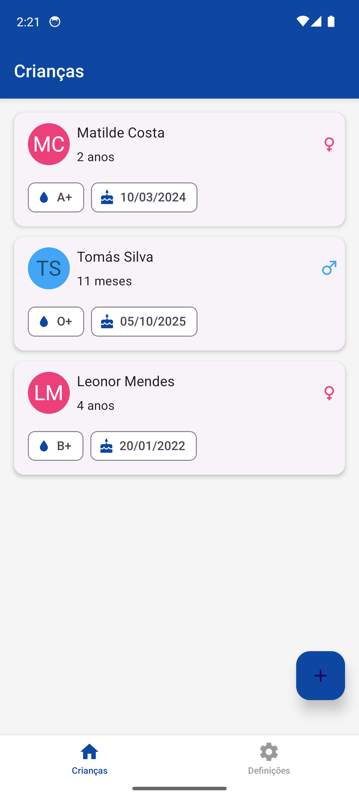
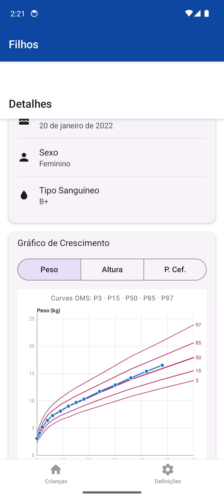
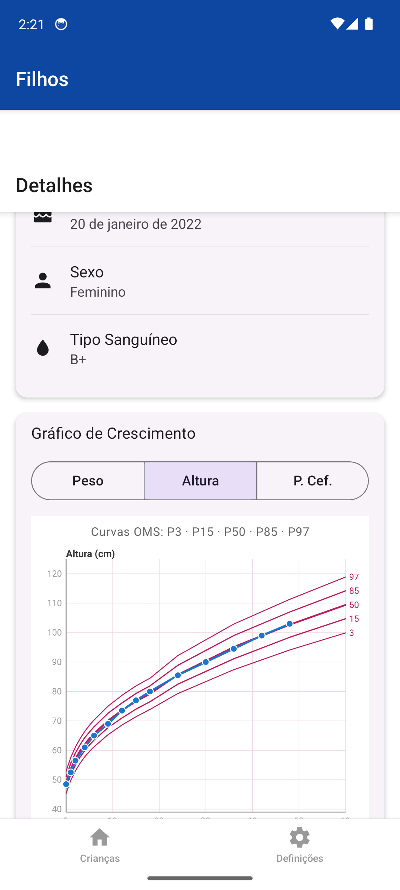
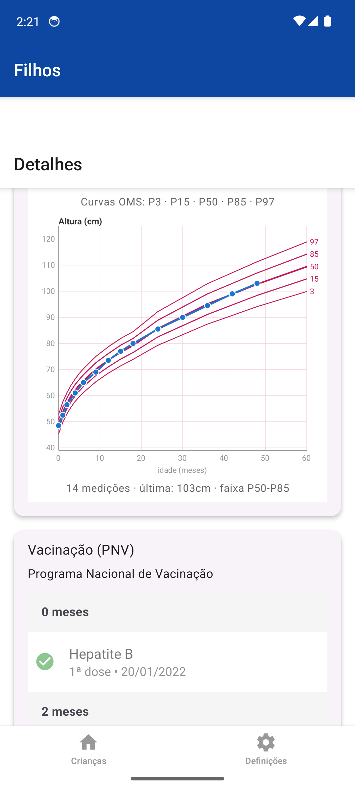
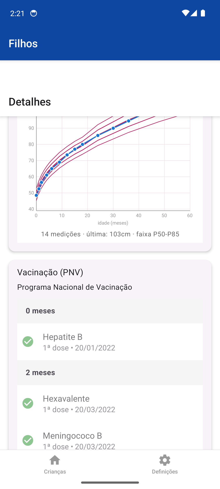

Funcionalidades
- Perfis de filhosVários filhos, avatar por género, idade calculada automaticamente, tipo sanguíneo.
- Medições longitudinaisPeso, altura, perímetro cefálico, IMC, tensão arterial — fonte manual, OCR ou médico.
- Curvas de percentis OMSGráficos com as 5 curvas P3/P15/P50/P85/P97 (rapazes e raparigas) desenhadas em SVG, tal como no boletim em papel.
- Vacinação PNVCronologia do Programa Nacional de Vacinação português agrupada por idade (0m, 2m, 4m, 6m, 12m…).
- OCR de boletimDigitaliza o boletim em papel e extrai medições e vacinas automaticamente com Tesseract.js.
- 100% offlineSQLite local, sem login, sem backend — privacidade por design.
Screenshots





Dados da demo
Três perfis com progressões realistas (entre P15–P85) para mostrar o produto em fases diferentes.
A seed é idempotente e só corre quando a env EXPO_PUBLIC_SEED_DEMO=true está activa.
| Criança | Idade | Medições | Perfil |
|---|---|---|---|
| Leonor Mendes | ~4 anos | 14 | Série longa para gráficos · 13 vacinas PNV |
| Matilde Costa | ~2 anos | 9 | 12 vacinas em dia |
| Tomás Silva | ~6 meses | 5 | Primeiro semestre PNV |
Decisões técnicas
- Gráficos em SVG puroEm vez de
react-native-chart-kit(que obriga datasets a partilhar o eixo X), usareact-native-svgpara desenhar as 5 curvas de percentis em toda a gama etária com os pontos da criança sobrepostos. - Drizzle + SQLiteSchema tipado e migrações versionadas; zero setup para o utilizador.
- Seed inlineA seed corre dentro da app (
expo-sqlitetem binding nativo), guardada por flag de env para não contaminar instalações reais. - Maestro para demoApp com SQLite + câmara não corre em browser → Playwright não serve. Maestro faz o equivalente mobile (YAML declarativo, screenshots, vídeo).